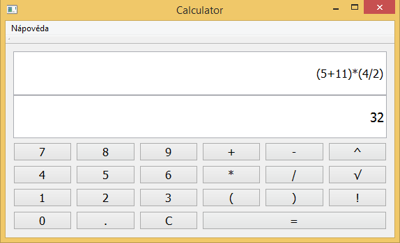

V této příručce je popsáno ovládaní a funkce kalkulačky, která byla vytvářena do předmětu Praktické aspekty vývoje software. Příručka je koncipována tak, že se uživatel nejprve seznámí s funkcemi programu, poté s jeho ovládacími prvky.
Kalkulačka zvládá základní matematické operace - sčítání, odčítání, násobení a dělení. Kromě toho zvládá i faktoriál, umocňování s přirozenými exponenty a odmocňování. Dále jsou zde zabudované závorky, které určují prioritu operací.
Podporované systémy:Microsoft Windows XP a vyšší.
Uživatelské rozhraní se skládá ze dvou částí - z klávesnice a displeje.
Displej je složen ze dvou řádků. Na prvním z nich se zobrazují čísla a znaky, které zadal uživatel pomocí numerické klávesnice nebo stisknutím dostupných tlačítek. Na druhém řádku lze po stiknutí klávesy „Enter“,nebo po zmáčknutí tlačítka „=“ vidět výsledek. Výsledek je vypisován na 6. desetinných míst, s tím že poslední desetinné místo je zaokrouhlené.
V případě nejasností nebo přípomínek se můžete obrátit na e-mailovou adresu vedoucího projektu na adrese xpoles05@stud.fit.vutbr.cz.